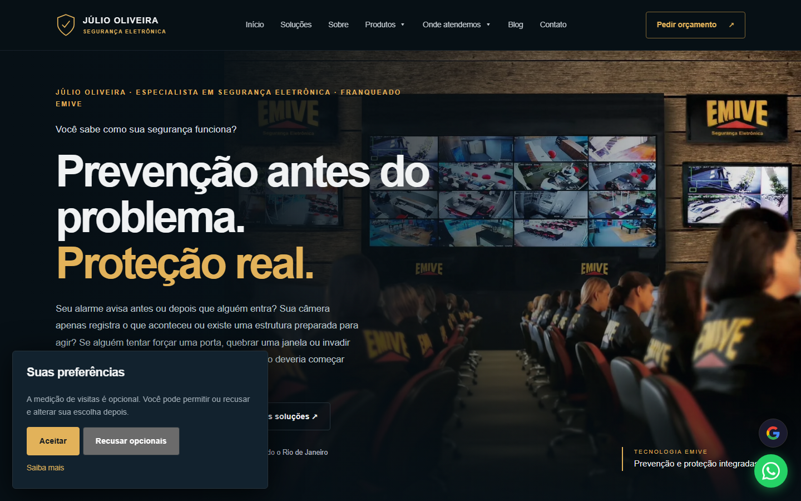
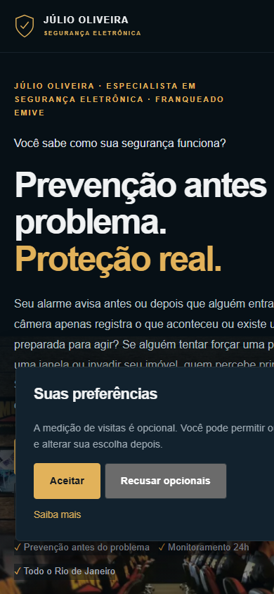

Como entregamos o site do Júlio Segurança Eletrônica
Cliente real, site publicado e funcionando hoje. Este texto documenta o que era a demanda, o que foi entregue, as decisões de desenvolvimento e SEO e o que já está no radar de melhoria. Dados de tráfego medidos serão agregados quando o Search Console do cliente estiver disponível para consulta.
A necessidade inicial
O Júlio Segurança Eletrônica é uma empresa de segurança eletrônica no Rio de Janeiro: instalação de câmeras, alarmes e monitoramento 24 horas com soluções preventivas EMIVE. O serviço é local, competitivo e depende de confiança — quem contrata quer ver prova antes de chamar.
Duas demandas guiaram o projeto:
- Um site profissional que transmitisse credibilidade na primeira visita (no mercado de segurança, um site fraco custa a chamada).
- Fazer a avaliação gratuita entrar em contato direto pelo WhatsApp, sem formulário parado no meio do caminho.
O escopo entregue
Site institucional de uma página
Estrutura enxuta que apresenta o negócio, os serviços e o diferencial EMIVE sem burocracia — a página inteira serve uma decisão: chamar o Júlio.
SEO local para o Rio de Janeiro
Escrita otimizada para buscas locais do segmento, com foco em quem procura segurança eletrônica, câmeras e monitoramento na região.
Prova social em destaque
Avaliações de clientes ★★★★★ exibidas na página — a evidência de serviço entregue fica visível para o visitante sem precisar sair do site.
CTA direto de avaliação gratuita
Chamadas de ação constantes para avaliação gratuita, funcionando no desktop e no celular.
Decisões de desenvolvimento e SEO
- HTML próprio e leve: código escrito do zero, sem plataformas genéricas — carrega rápido até em internet de celular, que é onde a maioria dos leads de segurança eletrônica chega.
- Dados estruturados do negócio do cliente: marcação do negócio local para o Google entender segmento, região e contato.
- Prova social no HTML, não em imagem: as avaliações ficam em texto selecionável — os motores de busca e as IAs conseguem ler e citar o depoimento.
- Conversão acima de vitrine: o CTA de avaliação gratuita mantém mensagem pré-preenchida, para o contato já chegar contextualizado.
Capturas do site publicado
Registro em 18/10/2026 do site no ar em juliosegurancaeletronica.com.br.


Resultados — o que está comprovado hoje
Fato verificável: o site está publicado e operando — juliosegurancaeletronica.com.br responde no ar, com as avaliações de clientes exibidas na própria página. As avaliaçõesens em destaque na página são do serviço de segurança do cliente — elas comprovam a qualidade do negócio dele, não do nosso trabalho.
O que ainda não está medido e documentado: volume de visitas orgânicas, posição média no Google e contatos gerados. Essas métricas precisam do Search Console do cliente e serão agregadas aqui quando o acesso existir. Preferimos publicar sem número que seria alucinado.
Próximas melhorias planejadas
- Medir no Search Console do cliente: impressões, cliques posições das buscas locais do segmento.
- Recolher e publicar novas avaliações de clientes do Júlio para fortalecer a prova social.
- Avaliar páginas de serviço específicas (câmeras, alarmes, monitoramento) conforme demanda de busca.
Quer um site assim para o seu negócio?
Fazemos o mesmo processo para empresas do Rio de Janeiro e de todo o Brasil: site profissional, SEO local e caminho direto para o WhatsApp.